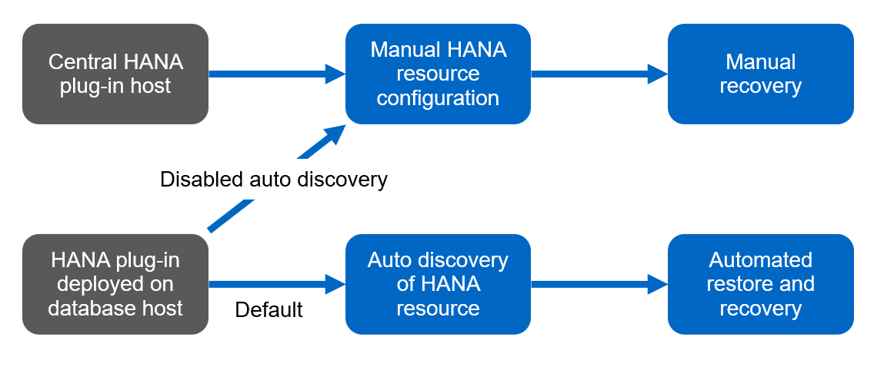
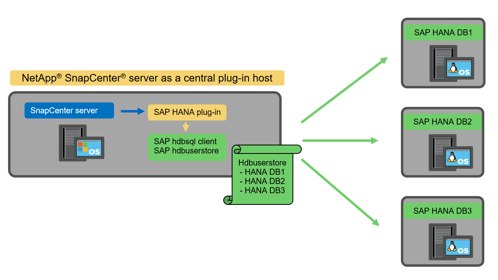

Richiedi modifiche alla documentazione
Richiedi modifiche alla documentazione Modifica questa pagina
Modifica questa pagina Scopri come collaborare
Scopri come collaborareConcetti e Best practice di SnapCenter
Collaboratori
Opzioni e concetti di configurazione delle risorse SAP HANA
Con SnapCenter, la configurazione delle risorse del database SAP HANA può essere eseguita con due approcci diversi.
-
Configurazione manuale delle risorse. le informazioni relative alle risorse HANA e all’impatto dello storage devono essere fornite manualmente.
-
Rilevamento automatico delle risorse HANA. il rilevamento automatico semplifica la configurazione dei database HANA in SnapCenter e consente il ripristino e il ripristino automatici.
È importante comprendere che solo le risorse di database HANA rilevate automaticamente in SnapCenter sono abilitate per il ripristino e il ripristino automatici. Le risorse di database HANA configurate manualmente in SnapCenter devono essere ripristinate manualmente dopo un’operazione di ripristino in SnapCenter.
D’altro canto, il rilevamento automatico con SnapCenter non è supportato per tutte le architetture HANA e le configurazioni dell’infrastruttura. Pertanto, gli ambienti HANA potrebbero richiedere un approccio misto in cui alcuni sistemi HANA (sistemi host multipli HANA) richiedono la configurazione manuale delle risorse e tutti gli altri possono essere configurati utilizzando il rilevamento automatico.
Il rilevamento automatico, il ripristino e il ripristino automatici dipendono dalla capacità di eseguire comandi del sistema operativo sull’host del database. Ad esempio, le operazioni di rilevamento del footprint del file system e dello storage e di disinstallazione, montaggio o LUN. Queste operazioni vengono eseguite con il plug-in Linux di SnapCenter, che viene implementato automaticamente insieme al plug-in HANA. Pertanto, è necessario implementare il plug-in HANA sull’host del database per abilitare il rilevamento automatico e il ripristino e ripristino automatici. È inoltre possibile disattivare la funzione di rilevamento automatico dopo l’implementazione del plug-in HANA sull’host del database. In questo caso, la risorsa sarà configurata manualmente.
La figura seguente riepiloga le dipendenze. Per ulteriori informazioni sulle opzioni di implementazione di HANA, consultare la sezione "Opzioni di implementazione per il plug-in SAP HANA".


|
I plug-in HANA e Linux sono attualmente disponibili solo per i sistemi basati su Intel. Se i database HANA sono in esecuzione su IBM Power Systems, è necessario utilizzare un host plug-in HANA centrale. |
Architetture HANA supportate per il rilevamento automatico e il ripristino automatizzato
Con SnapCenter, il rilevamento automatico e il ripristino e ripristino automatici sono supportati per la maggior parte delle configurazioni HANA, con l’eccezione che i sistemi host multipli HANA richiedono una configurazione manuale.
La seguente tabella mostra le configurazioni HANA supportate per il rilevamento automatico.
| Plug-in HANA installato su: | Architettura HANA | Configurazione del sistema HANA | Infrastruttura |
|---|---|---|---|
Host del database HANA |
Host singolo |
|
|
|
|
I sistemi HANA MDC con più tenant sono supportati per il rilevamento automatico, ma non per il ripristino e il ripristino automatici con la release corrente di SnapCenter. |
Architetture HANA supportate per la configurazione manuale delle risorse HANA
La configurazione manuale delle risorse HANA è supportata per tutte le architetture HANA; tuttavia, richiede un host plug-in HANA centrale. L’host del plug-in centrale può essere il server SnapCenter stesso o un host Linux o Windows separato.
|
|
Quando il plug-in HANA viene distribuito sull’host del database HANA, per impostazione predefinita, la risorsa viene rilevata automaticamente. La funzione di rilevamento automatico può essere disattivata per i singoli host, in modo che il plug-in possa essere implementato, ad esempio su un host di database con replica di sistema HANA attivata e una release di SnapCenter < 4.6, in cui la funzione di rilevamento automatico non è supportata. Per ulteriori informazioni, vedere la sezione ""Disattiva il rilevamento automatico sull’host plug-in HANA."" |
La tabella seguente mostra le configurazioni HANA supportate per la configurazione manuale delle risorse HANA.
| Plug-in HANA installato su: | Architettura HANA | Configurazione del sistema HANA | Infrastruttura |
|---|---|---|---|
Host plug-in centrale (server SnapCenter o host Linux separato) |
Host singolo o multiplo |
|
|
Opzioni di implementazione per il plug-in SAP HANA
La figura seguente mostra la vista logica e la comunicazione tra il server SnapCenter e i database SAP HANA.
Il server SnapCenter comunica tramite il plug-in SAP HANA con i database SAP HANA. Il plug-in SAP HANA utilizza il software client SAP HANA hdbsql per eseguire comandi SQL nei database SAP HANA. SAP HANA hdbuserstore viene utilizzato per fornire le credenziali dell’utente, il nome host e le informazioni sulla porta per accedere ai database SAP HANA.

|
|
Il plug-in SAP HANA e il software client SAP hdbsql, che includono il tool di configurazione hdbuserstore, devono essere installati insieme sullo stesso host. |
L’host può essere il server SnapCenter stesso, un host plug-in centrale separato o i singoli host di database SAP HANA.
Server SnapCenter ad alta disponibilità
SnapCenter può essere configurato in una configurazione ha a due nodi. In una tale configurazione, un bilanciamento del carico (ad esempio F5) viene utilizzato in una modalità attiva/passiva utilizzando un indirizzo IP virtuale che punta all’host SnapCenter attivo. Il repository SnapCenter (il database MySQL) viene replicato da SnapCenter tra i due host in modo che i dati SnapCenter siano sempre sincronizzati.
Il server SnapCenter ha non è supportato se il plug-in HANA è installato sul server SnapCenter. Se si intende configurare SnapCenter in una configurazione ha, non installare il plug-in HANA sul server SnapCenter. Ulteriori informazioni su SnapCenter ha sono disponibili al seguente indirizzo "Pagina della Knowledge base di NetApp".
Server SnapCenter come host plug-in HANA centrale
La figura seguente mostra una configurazione in cui il server SnapCenter viene utilizzato come host plug-in centrale. Il plug-in SAP HANA e il software client SAP hdbsql sono installati sul server SnapCenter.

Poiché il plug-in HANA può comunicare con i database HANA gestiti utilizzando il client hdbattraverso la rete, non è necessario installare alcun componente SnapCenter sui singoli host di database HANA. SnapCenter può proteggere i database HANA utilizzando un plug-in host centrale HANA su cui sono configurate tutte le chiavi dell’archivio utenti per i database gestiti.
D’altro canto, l’automazione avanzata del workflow per il rilevamento automatico, l’automazione del ripristino e del ripristino, nonché le operazioni di refresh del sistema SAP, richiedono l’installazione dei componenti SnapCenter sull’host del database. Quando si utilizza un host plug-in HANA centrale, queste funzioni non sono disponibili.
Inoltre, l’elevata disponibilità del server SnapCenter che utilizza la funzionalità ha integrata non può essere utilizzata quando il plug-in HANA è installato sul server SnapCenter. È possibile ottenere un’elevata disponibilità utilizzando VMware ha se il server SnapCenter viene eseguito in una macchina virtuale all’interno di un cluster VMware.
Separare l’host come host plug-in HANA centrale
La figura seguente mostra una configurazione in cui un host Linux separato viene utilizzato come host plug-in centrale. In questo caso, il plug-in SAP HANA e il software client SAP hdbsql vengono installati sull’host Linux.
|
|
Il plug-in host centrale separato può anche essere un host Windows. |

La stessa restrizione relativa alla disponibilità delle funzionalità descritta nella sezione precedente si applica anche a un host plug-in centrale separato.
Tuttavia, con questa opzione di implementazione, il server SnapCenter può essere configurato con la funzionalità ha integrata. Anche l’host del plug-in centrale deve essere ha, ad esempio, utilizzando una soluzione cluster Linux.
Plug-in HANA implementato su singoli host di database HANA
La figura seguente mostra una configurazione in cui il plug-in SAP HANA è installato su ciascun host di database SAP HANA.

Quando il plug-in HANA viene installato su ogni singolo host di database HANA, sono disponibili tutte le funzionalità, come il rilevamento automatico e il ripristino e ripristino automatici. Inoltre, il server SnapCenter può essere configurato in una configurazione ha.
Implementazione di plug-in HANA misti
Come discusso all’inizio di questa sezione, alcune configurazioni di sistema HANA, come i sistemi a più host, richiedono un host plug-in centrale. Pertanto, la maggior parte delle configurazioni SnapCenter richiede un’implementazione mista del plug-in HANA.
NetApp consiglia di implementare il plug-in HANA sull’host del database HANA per tutte le configurazioni di sistema HANA supportate per il rilevamento automatico. Gli altri sistemi HANA, come le configurazioni di più host, devono essere gestiti con un host plug-in HANA centrale.
Le due figure seguenti mostrano le implementazioni di plug-in misti con il server SnapCenter o un host Linux separato come host plug-in centrale. L’unica differenza tra queste due implementazioni è la configurazione ha opzionale.


Riepilogo e consigli
In generale, NetApp consiglia di implementare il plug-in HANA su ciascun host SAP HANA per abilitare tutte le funzionalità HANA SnapCenter disponibili e migliorare l’automazione del workflow.
|
|
I plug-in HANA e Linux sono attualmente disponibili solo per i sistemi basati su Intel. Se i database HANA sono in esecuzione su IBM Power Systems, è necessario utilizzare un host plug-in HANA centrale. |
Per le configurazioni HANA in cui non è supportato il rilevamento automatico, come ad esempio le configurazioni di più host HANA, è necessario configurare un host plug-in HANA centrale aggiuntivo. L’host del plug-in centrale può essere il server SnapCenter se VMware ha può essere utilizzato per SnapCenter ha. Se si intende utilizzare la funzionalità ha integrata di SnapCenter, utilizzare un host plug-in Linux separato.
Nella tabella seguente sono riepilogate le diverse opzioni di implementazione.
| Opzione di implementazione | Dipendenze |
|---|---|
Plug-in host HANA centrale installato sul server SnapCenter |
Pro: * Plug-in HANA singolo, configurazione centrale dello store utente HDB * Nessun componente software SnapCenter richiesto su singoli host di database HANA * supporto di tutte le architetture HANA Cons: * Configurazione manuale delle risorse * Ripristino manuale * Nessun supporto per il ripristino di un singolo tenant * qualsiasi istruzione pre e post-script viene eseguita sull’host del plug-in centrale * disponibilità elevata SnapCenter integrata non supportata * la combinazione di SID e nome del tenant deve essere univoca in tutti i database HANA gestiti * Registro Gestione della conservazione dei backup abilitata/disabilitata per tutti i database HANA gestiti |
Plug-in host HANA centrale installato su server Linux o Windows separati |
Pro: * Plug-in HANA singolo, configurazione centrale dello store utente HDB * Nessun componente software SnapCenter richiesto su singoli host di database HANA * supporto di tutte le architetture HANA * SnapCenter integrato ad alta disponibilità supportato Cons: * Configurazione manuale delle risorse * Ripristino manuale * Nessun supporto per il ripristino di un singolo tenant * qualsiasi istruzione pre e post-script viene eseguita sull’host del plug-in centrale * la combinazione di SID e nome del tenant deve essere unica in tutti i database HANA gestiti * Gestione della conservazione del backup del log attivata/disattivata per tutti i database gestiti Database HANA |
Plug-in host singolo HANA installato sul server di database HANA |
Pro: * Rilevamento automatico delle risorse HANA * Ripristino e ripristino automatizzati * Ripristino singolo tenant * automazione pre e post-script per il refresh del sistema SAP * disponibilità elevata SnapCenter integrata supportata * Gestione della conservazione del backup dei log attivabile/disattivabile per ogni singolo database HANA Cons: * Non supportato per tutte le architetture HANA. È richiesto un host plug-in centrale aggiuntivo per sistemi host multipli HANA. * Il plug-in HANA deve essere implementato su ogni host di database HANA |
Strategia di protezione dei dati
Prima di configurare SnapCenter e il plug-in SAP HANA, la strategia di protezione dei dati deve essere definita in base ai requisiti RTO e RPO dei vari sistemi SAP.
Un approccio comune consiste nella definizione di tipi di sistema quali produzione, sviluppo, test o sistemi sandbox. Tutti i sistemi SAP dello stesso tipo di sistema hanno in genere gli stessi parametri di protezione dei dati.
I parametri da definire sono:
-
Con quale frequenza deve essere eseguito un backup Snapshot?
-
Per quanto tempo i backup delle copie Snapshot devono essere conservati nel sistema di storage primario?
-
Con quale frequenza deve essere eseguito un controllo dell’integrità dei blocchi?
-
I backup primari devono essere replicati in un sito di backup off-site?
-
Per quanto tempo i backup devono essere conservati nello storage di backup off-site?
La seguente tabella mostra un esempio di parametri di protezione dei dati per la produzione, lo sviluppo e il test del tipo di sistema. Per il sistema di produzione, è stata definita una frequenza di backup elevata e i backup vengono replicati su un sito di backup off-site una volta al giorno. I sistemi di test hanno requisiti inferiori e nessuna replica dei backup.
| Parametri | Sistemi di produzione | Sistemi di sviluppo | Sistemi di test |
|---|---|---|---|
Frequenza di backup |
Ogni 4 ore |
Ogni 4 ore |
Ogni 4 ore |
Conservazione primaria |
2 giorni |
2 giorni |
2 giorni |
Controllo dell’integrità del blocco |
Una volta alla settimana |
Una volta alla settimana |
No |
Replica su un sito di backup off-site |
Una volta al giorno |
Una volta al giorno |
No |
Conservazione del backup off-site |
2 settimane |
2 settimane |
Non applicabile |
La tabella seguente mostra i criteri che devono essere configurati per i parametri di protezione dei dati.
| Parametri | PolicyLocalSnap | PolicyLocalSnapAndSnapVault | PolicyBlockIntegrityCheck |
|---|---|---|---|
Tipo di backup |
Basato su Snapshot |
Basato su Snapshot |
Basato su file |
Frequenza di pianificazione |
Ogni ora |
Ogni giorno |
Settimanale |
Conservazione primaria |
Conteggio = 12 |
Conteggio = 3 |
Conteggio = 1 |
Replica SnapVault |
No |
Sì |
Non applicabile |
La policy LocalSnapshot Viene utilizzato per i sistemi di produzione, sviluppo e test per coprire i backup Snapshot locali con una conservazione di due giorni.
Nella configurazione di protezione delle risorse, la pianificazione viene definita in modo diverso per i tipi di sistema:
-
Produzione. programma ogni 4 ore.
-
Sviluppo. programma ogni 4 ore.
-
Test. programma ogni 4 ore.
La policy LocalSnapAndSnapVault viene utilizzato per i sistemi di produzione e sviluppo per coprire la replica giornaliera nello storage di backup off-site.
Nella configurazione della protezione delle risorse, viene definito il calendario per la produzione e lo sviluppo:
-
Produzione. programma ogni giorno.
-
Sviluppo. programma ogni giorno.
La policy BlockIntegrityCheck viene utilizzato per i sistemi di produzione e sviluppo per la verifica settimanale dell’integrità dei blocchi mediante un backup basato su file.
Nella configurazione della protezione delle risorse, viene definito il calendario per la produzione e lo sviluppo:
-
Produzione. programma ogni settimana.
-
* Sviluppo.* programma ogni settimana.
Per ogni singolo database SAP HANA che utilizza la policy di backup off-site, è necessario configurare una relazione di protezione sul layer di storage. La relazione di protezione definisce quali volumi vengono replicati e la conservazione dei backup nello storage di backup off-site.
Con il nostro esempio, per ogni sistema di produzione e sviluppo, viene definita una conservazione di due settimane nello storage di backup off-site.
|
|
Nel nostro esempio, le policy di protezione e la conservazione per le risorse di database SAP HANA e per le risorse non di volumi di dati non sono diverse. |
Operazioni di backup
SAP ha introdotto il supporto dei backup Snapshot per i sistemi multi-tenant MDC con HANA 2.0 SPS4. SnapCenter supporta le operazioni di backup Snapshot dei sistemi HANA MDC con tenant multipli. SnapCenter supporta inoltre due diverse operazioni di ripristino di un sistema HANA MDC. È possibile ripristinare l’intero sistema, il database di sistema e tutti i tenant oppure un solo tenant. Esistono alcuni prerequisiti per consentire a SnapCenter di eseguire queste operazioni.
In un sistema MDC, la configurazione del tenant non è necessariamente statica. È possibile aggiungere tenant o eliminarli. SnapCenter non può fare affidamento sulla configurazione rilevata quando il database HANA viene aggiunto a SnapCenter. SnapCenter deve sapere quali tenant sono disponibili nel momento in cui viene eseguita l’operazione di backup.
Per abilitare una singola operazione di ripristino del tenant, SnapCenter deve sapere quali tenant sono inclusi in ogni backup Snapshot. Inoltre, deve sapere quali file e directory appartengono a ciascun tenant incluso nel backup Snapshot.
Pertanto, con ogni operazione di backup, il primo passo nel flusso di lavoro è ottenere le informazioni sul tenant. Sono inclusi i nomi dei tenant e le informazioni relative a file e directory corrispondenti. Questi dati devono essere memorizzati nei metadati di backup Snapshot per poter supportare una singola operazione di ripristino del tenant. Il passo successivo è l’operazione di backup Snapshot. Questo passaggio include il comando SQL per attivare il punto di salvataggio del backup HANA, il backup Snapshot dello storage e il comando SQL per chiudere l’operazione Snapshot. Utilizzando il comando close, il database HANA aggiorna il catalogo di backup del database di sistema e di ciascun tenant.
|
|
SAP non supporta le operazioni di backup Snapshot per i sistemi MDC quando uno o più tenant vengono arrestati. |
Per la gestione della conservazione dei backup dei dati e della gestione del catalogo di backup HANA, SnapCenter deve eseguire le operazioni di eliminazione del catalogo per il database di sistema e per tutti i database tenant identificati nella prima fase. Allo stesso modo per i backup dei log, il flusso di lavoro di SnapCenter deve operare su ogni tenant che faceva parte dell’operazione di backup.
La figura seguente mostra una panoramica del flusso di lavoro di backup.

Workflow di backup per i backup Snapshot del database HANA
SnapCenter esegue il backup del database SAP HANA nella seguente sequenza:
-
SnapCenter legge l’elenco dei tenant dal database HANA.
-
SnapCenter legge i file e le directory di ciascun tenant dal database HANA.
-
Le informazioni del tenant vengono memorizzate nei metadati SnapCenter per questa operazione di backup.
-
SnapCenter attiva un punto di salvataggio di backup sincronizzato globale SAP HANA per creare un’immagine di database coerente sul layer di persistenza.
Per un sistema di tenant singolo o multiplo SAP HANA MDC, viene creato un punto di salvataggio di backup globale sincronizzato per il database di sistema e per ogni database tenant. -
SnapCenter crea copie Snapshot dello storage per tutti i volumi di dati configurati per la risorsa. Nel nostro esempio di database HANA a host singolo, esiste un solo volume di dati. Con un database multi-host SAP HANA, esistono più volumi di dati.
-
SnapCenter registra il backup Snapshot dello storage nel catalogo di backup SAP HANA.
-
SnapCenter elimina il punto di salvataggio del backup SAP HANA.
-
SnapCenter avvia un aggiornamento di SnapVault o SnapMirror per tutti i volumi di dati configurati nella risorsa.
Questo passaggio viene eseguito solo se il criterio selezionato include una replica di SnapVault o SnapMirror. -
SnapCenter elimina le copie Snapshot dello storage e le voci di backup nel database e nel catalogo di backup SAP HANA in base alla policy di conservazione definita per i backup nello storage primario. Le operazioni del catalogo di backup HANA vengono eseguite per il database di sistema e per tutti i tenant.
Se il backup è ancora disponibile nello storage secondario, la voce del catalogo SAP HANA non viene eliminata. -
SnapCenter elimina tutti i backup dei log nel file system e nel catalogo di backup SAP HANA precedenti al backup dei dati meno recente identificato nel catalogo di backup SAP HANA. Queste operazioni vengono eseguite per il database di sistema e per tutti i tenant.
Questo passaggio viene eseguito solo se la gestione del backup dei log non è disattivata.
Workflow di backup per operazioni di controllo dell’integrità dei blocchi
SnapCenter esegue il controllo dell’integrità del blocco nella seguente sequenza:
-
SnapCenter legge l’elenco dei tenant dal database HANA.
-
SnapCenter attiva un’operazione di backup basata su file per il database di sistema e per ciascun tenant.
-
SnapCenter elimina i backup basati su file nel proprio database, nel file system e nel catalogo di backup SAP HANA in base alla policy di conservazione definita per le operazioni di controllo dell’integrità dei blocchi. Le operazioni di eliminazione del backup nel file system e nel catalogo di backup HANA vengono eseguite per il database di sistema e per tutti i tenant.
-
SnapCenter elimina tutti i backup dei log nel file system e nel catalogo di backup SAP HANA precedenti al backup dei dati meno recente identificato nel catalogo di backup SAP HANA. Queste operazioni vengono eseguite per il database di sistema e per tutti i tenant.
|
|
Questo passaggio viene eseguito solo se la gestione del backup dei log non è disattivata. |
Gestione della conservazione dei backup e gestione dei backup di dati e log
La gestione della conservazione dei backup dei dati e la gestione del backup dei log possono essere suddivise in cinque aree principali, tra cui la gestione della conservazione di:
-
Backup locali nello storage primario
-
Backup basati su file
-
Backup nello storage secondario
-
Backup dei dati nel catalogo di backup SAP HANA
-
Registrare i backup nel catalogo di backup SAP HANA e nel file system
La figura seguente fornisce una panoramica dei diversi flussi di lavoro e delle dipendenze di ciascuna operazione. Le sezioni seguenti descrivono in dettaglio le diverse operazioni.

Gestione della conservazione dei backup locali nello storage primario
SnapCenter gestisce la gestione dei backup dei database SAP HANA e dei backup dei volumi non dati eliminando le copie Snapshot sullo storage primario e nel repository SnapCenter in base a una conservazione definita nella policy di backup di SnapCenter.
La logica di gestione della conservazione viene eseguita con ogni flusso di lavoro di backup in SnapCenter.
|
|
Tenere presente che SnapCenter gestisce la gestione della conservazione individualmente per i backup pianificati e on-demand. |
I backup locali nello storage primario possono anche essere cancellati manualmente in SnapCenter.
Gestione della conservazione dei backup basati su file
SnapCenter gestisce la gestione dei backup basati su file eliminando i backup sul file system in base a una conservazione definita nella policy di backup di SnapCenter.
La logica di gestione della conservazione viene eseguita con ogni flusso di lavoro di backup in SnapCenter.
|
|
Tenere presente che SnapCenter gestisce la gestione della conservazione individualmente per i backup pianificati o on-demand. |
Gestione della conservazione dei backup nello storage secondario
La gestione della conservazione dei backup nello storage secondario viene gestita da ONTAP in base alla conservazione definita nella relazione di protezione ONTAP.
Per sincronizzare queste modifiche sullo storage secondario nel repository SnapCenter, SnapCenter utilizza un lavoro di pulizia pianificato. Questo processo di pulizia sincronizza tutti i backup dello storage secondario con il repository SnapCenter per tutti i plug-in SnapCenter e tutte le risorse.
Per impostazione predefinita, il lavoro di pulizia viene pianificato una volta alla settimana. Questa pianificazione settimanale comporta un ritardo nell’eliminazione dei backup in SnapCenter e SAP HANA Studio rispetto ai backup già cancellati nello storage secondario. Per evitare questa incoerenza, i clienti possono modificare la pianificazione con una frequenza più elevata, ad esempio una volta al giorno.
|
|
Il processo di pulitura può essere attivato anche manualmente per una singola risorsa facendo clic sul pulsante Refresh (Aggiorna) nella vista della topologia della risorsa. |
Per informazioni dettagliate su come adattare la pianificazione del lavoro di pulizia o come attivare un aggiornamento manuale, fare riferimento alla sezione ""Modificare la frequenza di pianificazione della sincronizzazione del backup con lo storage di backup off-site.""
Gestione della conservazione dei backup dei dati all’interno del catalogo di backup SAP HANA
Quando SnapCenter ha eliminato qualsiasi backup, snapshot locale o basato su file o ha identificato l’eliminazione del backup nello storage secondario, questo backup dei dati viene eliminato anche nel catalogo di backup SAP HANA.
Prima di eliminare la voce del catalogo SAP HANA per un backup Snapshot locale nello storage primario, SnapCenter verifica se il backup esiste ancora nello storage secondario.
Gestione della conservazione dei backup dei log
Il database SAP HANA crea automaticamente i backup dei log. Queste operazioni di backup dei log creano file di backup per ogni singolo servizio SAP HANA in una directory di backup configurata in SAP HANA.
I backup dei log precedenti all’ultimo backup dei dati non sono più necessari per il ripristino in avanti e possono quindi essere cancellati.
SnapCenter gestisce la gestione dei backup dei file di log a livello di file system e nel catalogo di backup SAP HANA eseguendo i seguenti passaggi:
-
SnapCenter legge il catalogo di backup SAP HANA per ottenere l’ID di backup del backup più vecchio basato su file o Snapshot.
-
SnapCenter elimina tutti i backup dei log nel catalogo SAP HANA e il file system che sono più vecchi di questo ID di backup.
|
|
SnapCenter gestisce l’housekeeping solo per i backup creati da SnapCenter. Se vengono creati backup aggiuntivi basati su file al di fuori di SnapCenter, è necessario assicurarsi che i backup basati su file vengano eliminati dal catalogo di backup. Se tale backup dei dati non viene eliminato manualmente dal catalogo di backup, può diventare il backup dei dati meno recente e i backup dei log meno recenti non vengono cancellati fino a quando questo backup basato su file non viene eliminato. |
|
|
Anche se viene definita una conservazione per i backup on-demand nella configurazione dei criteri, la pulizia viene eseguita solo quando viene eseguito un altro backup on-demand. Di conseguenza, i backup on-demand devono essere cancellati manualmente in SnapCenter per assicurarsi che questi backup vengano eliminati anche nel catalogo di backup SAP HANA e che la manutenzione del backup dei log non sia basata su un vecchio backup on-demand. |
La gestione della conservazione dei backup dei log è attivata per impostazione predefinita. Se necessario, può essere disattivato come descritto nella sezione ""Disattiva il rilevamento automatico sull’host plug-in HANA.""
Requisiti di capacità per i backup Snapshot
È necessario considerare il tasso di cambiamento di blocco più elevato sul livello di storage rispetto al tasso di cambiamento con i database tradizionali. A causa del processo di Unione delle tabelle HANA dell’archivio di colonne, la tabella completa viene scritta su disco, non solo sui blocchi modificati.
I dati della nostra base clienti mostrano un tasso di cambiamento giornaliero compreso tra il 20% e il 50% se vengono eseguiti più backup Snapshot durante il giorno. Nella destinazione SnapVault, se la replica viene eseguita solo una volta al giorno, il tasso di cambiamento giornaliero è generalmente inferiore.
Operazioni di ripristino e recovery
Ripristinare le operazioni con SnapCenter
Dal punto di vista del database HANA, SnapCenter supporta due diverse operazioni di ripristino.
-
Ripristino della risorsa completa. tutti i dati del sistema HANA vengono ripristinati. Se il sistema HANA contiene uno o più tenant, vengono ripristinati i dati del database di sistema e quelli di tutti i tenant.
-
Ripristino di un singolo tenant. vengono ripristinati solo i dati del tenant selezionato.
Dal punto di vista dello storage, le suddette operazioni di ripristino devono essere eseguite in modo diverso a seconda del protocollo di storage utilizzato (NFS o SAN Fibre Channel), della protezione dei dati configurata (storage primario con o senza storage di backup fuori sede), e il backup selezionato da utilizzare per l’operazione di ripristino (ripristino dallo storage di backup primario o fuori sede).
Ripristino di una risorsa completa dallo storage primario
Quando si ripristina l’intera risorsa dallo storage primario, SnapCenter supporta due diverse funzionalità di ONTAP per eseguire l’operazione di ripristino. È possibile scegliere tra le seguenti due funzioni:
-
Volume-Based SnapRestore. Un SnapRestore basato su volume riporta il contenuto del volume di storage allo stato del backup Snapshot selezionato.
-
Casella di controllo Volume Revert (Ripristina volume) disponibile per le risorse rilevate automaticamente utilizzando NFS.
-
Pulsante di opzione complete Resource (completa risorsa) per le risorse configurate manualmente.
-
-
File-based SnapRestore. Una SnapRestore basata su file, nota anche come Single file SnapRestore, ripristina tutti i singoli file (NFS) o tutte le LUN (SAN).
-
Metodo di ripristino predefinito per le risorse rilevate automaticamente. Può essere modificato utilizzando la casella di controllo Volume revert (Ripristina volume) per NFS.
-
Pulsante di opzione a livello di file per le risorse configurate manualmente.
-
Nella tabella seguente viene fornito un confronto tra i diversi metodi di ripristino.
| SnapRestore basato su volume | SnapRestore basato su file | |
|---|---|---|
Velocità delle operazioni di ripristino |
Molto veloce, indipendente dalle dimensioni del volume |
Operazione di ripristino molto rapida, ma utilizza un lavoro di copia in background sul sistema storage, che blocca la creazione di nuovi backup Snapshot |
Cronologia del backup di Snapshot |
Il ripristino a un backup Snapshot precedente rimuove tutti i backup Snapshot più recenti. |
Nessuna influenza |
Ripristino della struttura della directory |
Viene ripristinata anche la struttura della directory |
NFS: Ripristina solo i singoli file, non la struttura di directory. Se anche la struttura di directory viene persa, deve essere creata manualmente prima di eseguire l’operazione di ripristino VIENE ripristinata anche LA struttura di directory SAN: |
Risorsa configurata con replica su storage di backup fuori sede |
Non è possibile eseguire un ripristino basato su volume su un backup della copia Snapshot precedente alla copia Snapshot utilizzata per la sincronizzazione SnapVault |
È possibile selezionare qualsiasi backup Snapshot |
Ripristino di una risorsa completa dallo storage di backup fuori sede
Un ripristino dallo storage di backup offsite viene sempre eseguito utilizzando un’operazione di ripristino SnapVault in cui tutti i file o tutte le LUN del volume di storage vengono sovrascritti con il contenuto del backup Snapshot.
Ripristino di un singolo tenant
Il ripristino di un singolo tenant richiede un’operazione di ripristino basata su file. A seconda del protocollo di storage utilizzato, SnapCenter esegue diversi flussi di lavoro di ripristino.
-
NFS:
-
Storage primario. Le operazioni SnapRestore basate su file vengono eseguite per tutti i file del database tenant.
-
Storage di backup fuori sede: Le operazioni di ripristino SnapVault vengono eseguite per tutti i file del database tenant.
-
-
SAN:
-
Storage primario. Clonare e connettere il LUN all’host del database e copiare tutti i file del database del tenant.
-
Storage di backup fuori sede. Clonare e connettere il LUN all’host del database e copiare tutti i file del database del tenant.
-
Ripristino e ripristino di sistemi HANA single container e MDC single tenant rilevati automaticamente
I sistemi HANA single container e HANA MDC single tenant rilevati automaticamente sono abilitati per il ripristino e il ripristino automatici con SnapCenter. Per questi sistemi HANA, SnapCenter supporta tre diversi flussi di lavoro di ripristino e ripristino, come mostrato nella figura seguente:
-
Tenant singolo con ripristino manuale. se si seleziona una singola operazione di ripristino del tenant, SnapCenter elenca tutti i tenant inclusi nel backup Snapshot selezionato. È necessario arrestare e ripristinare manualmente il database del tenant. L’operazione di ripristino con SnapCenter viene eseguita con operazioni SnapRestore a file singolo per NFS o operazioni di cloning, montaggio e copia per ambienti SAN.
-
Completa la risorsa con il recovery automatizzato. se si seleziona un’operazione completa di ripristino delle risorse e il recovery automatizzato, l’intero workflow viene automatizzato con SnapCenter. SnapCenter supporta fino a recenti stati, point-in-time o specifiche operazioni di ripristino del backup. L’operazione di ripristino selezionata viene utilizzata per il sistema e il database tenant.
-
Completare la risorsa con il ripristino manuale. se si seleziona No Recovery, SnapCenter arresta il database HANA ed esegue le operazioni di file system (disinstallazione, montaggio) e ripristino richieste. È necessario ripristinare manualmente il sistema e il database del tenant.

Ripristino e ripristino di più sistemi tenant HANA MDC rilevati automaticamente
Anche se i sistemi HANA MDC con più tenant possono essere rilevati automaticamente, il ripristino e il ripristino automatici non sono supportati con l’attuale release di SnapCenter. Per i sistemi MDC con tenant multipli, SnapCenter supporta due diversi flussi di lavoro di ripristino e ripristino, come illustrato nella seguente figura:
-
Tenant singolo con ripristino manuale
-
Risorsa completa con ripristino manuale
I flussi di lavoro sono gli stessi descritti nella sezione precedente.

Ripristino e ripristino di risorse HANA configurate manualmente
Le risorse HANA configurate manualmente non sono abilitate per il ripristino e il ripristino automatici. Inoltre, per i sistemi MDC con uno o più tenant, non è supportata un’operazione di ripristino del tenant singolo.
Per le risorse HANA configurate manualmente, SnapCenter supporta solo il ripristino manuale, come illustrato nella figura seguente. Il flusso di lavoro per il ripristino manuale è lo stesso descritto nelle sezioni precedenti.

Operazioni di ripristino e ripristino riepilogative
La seguente tabella riassume le operazioni di ripristino e ripristino in base alla configurazione delle risorse HANA in SnapCenter.
| Configurazione delle risorse SnapCenter | Opzioni di ripristino | Arrestare il database HANA | Smontare prima, montare dopo l’operazione di ripristino | Operazione di recovery |
|---|---|---|---|---|
Rilevato automaticamente singolo tenant MDC container singolo |
|
Automatizzato con SnapCenter |
Automatizzato con SnapCenter |
Automatizzato con SnapCenter |
|
Automatizzato con SnapCenter |
Automatizzato con SnapCenter |
Manuale |
|
|
Manuale |
Non richiesto |
Manuale |
|
Rilevamento automatico di più tenant MDC |
|
Automatizzato con SnapCenter |
Automatizzato con SnapCenter |
Manuale |
|
Manuale |
Non richiesto |
Manuale |
|
Tutte le risorse configurate manualmente |
|
Manuale |
Manuale |
Manuale |